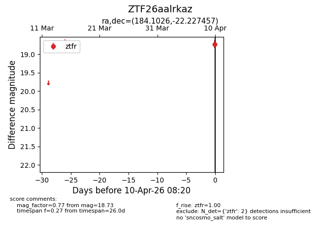
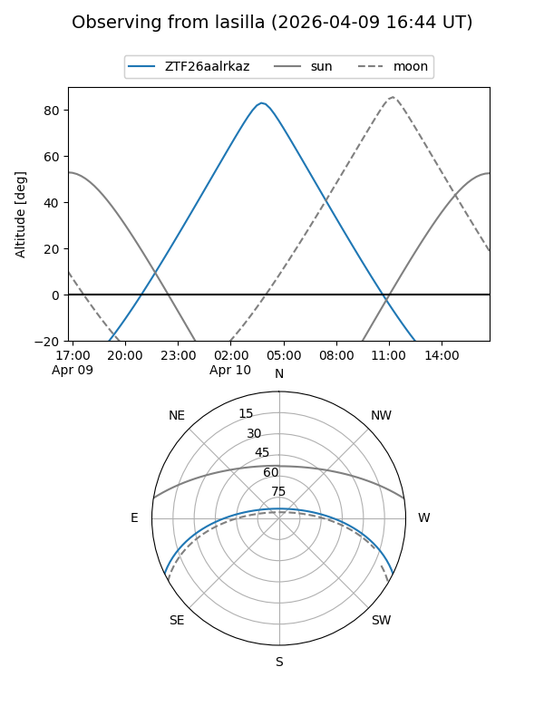
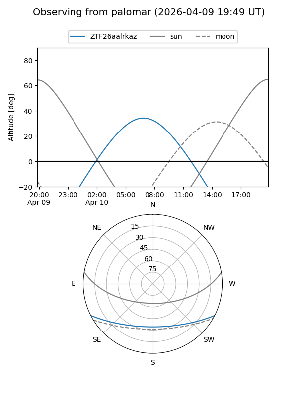

ZTF26aalrkaz
Target ZTF26aalrkaz at 2026-04-10 08:27
Aliases and brokers:
FINK: link
Lasair: link
ALeRCE: link
alt names
ZTF26aalrkaz (ztf,fink_ztf)
Coordinates:
equatorial (ra, dec) = 184.1026,-22.22746
equatorial (HMS+DMS) = 12:16:24.63,-22:13:38.85
galactic (l, b) = (292.3430,+39.92300)
Flags:
Photometry:
last ztfr=18.73
2 ztfr detections
Lightcurve

Visibility


Additional plots